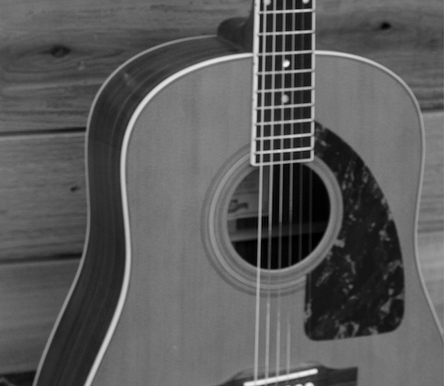

Garner means to obtain new skills. It also happens to be my last name. I think it comes from English origin. This book was put together throughout over a decade of teaching beginning to intermediate guitar lessons to students ages five to sixty-five. Many of these concepts are things I wish I had when I was first learning to play guitar. Many of these things are ways that I’ve found to describe A point of View of the guitar. Cubist art aims to view an object from multiple angles at the same time. I like to take the same approach to music and anything else that I learn. Understanding technical music theory is just as important as learning guitar specific techniques likeTab or the caged system. (Maybe switch the order of those last two and add standard notation to theory) In addition to helping Those new to the guitar and even some who have been playing a short time, this book will hopefully serve as an excellent resource for other guitar instructor’s. Add iOS apps list Methods I developed and adapted while teaching beginning guitarists ages 5 to 65. Organized differently- topics. Follow lesson plan or jump around. Use this book as a resource guide. Thorough. Many beginner books are so limited that they are confusing. As you progress as a guitarist this book may be useful. Read and study each lesson introduction - revisit unfamiliar topics. More than a method book- also a manual.
Selecting a guitar depends on a variety of factors from budget to preferred musical style. First things first, plan a visit to your local guitar store to play as many guitars as possible. Get a sense for how each instrument feels and sounds. You may find yourself drawn to a certain look or aesthetic—this is important stuff! The more you enjoy your instrument, the more likely you are to play, practice, and progress. This store visit will give you a feel for each instrument, which is not possible when shopping online. Even if you plan to eventually buy online (where you can typically find better deals), visiting a store in-person will give you an idea of what you like. Keep in mind that big box guitar stores are businesses, and employees are often paid on commission. Beware of these employees attempting to sell an uneducated beginner a less-than-ideal instrument. Smaller local guitar stores may be more honest and less sales-driven, but they also might not. While a beginner doesn’t need a professional level instrument, it is also wise to avoid the cheapest option. A cheap guitar will be more difficult to play which can be discouraging while learning. Aim to buy the best guitar that your budget allows. If you know what you’re looking for, you can find great deals on used instruments through websites like Reverb.com, eBay, and local Craigslist advertisements. For new instruments, use websites like Sweetwater, Musicians Friend, or even Amazon. Don’t be surprised if your guitar collection eventually grows. Different types of guitars allow you to play with a range of different tones, sounds, and textures because certain guitars lend themselves to particular styles of music.
There is a common misconception that beginners should start on acoustic guitar and then move on to electric guitar once they have learned the basics. I, for one, strongly disagree and recommend that students start with an electric or classical guitar. The acoustic guitar is by nature more difficult to play. The strings have more tension and are harder to press down, not to mention that the larger body can be cumbersome to reach around with the right arm. This can discourage practice while developing left-hand strength and building calluses. If you already have a guitar and/or can’t afford to buy a higher quality instrument, take your instrument to a highly regarded guitar tech for a set-up. A good set-up will make any instrument easier to play and can even make it sound better.
Arguably the most recognizable type of guitar, the electric guitar typically has six metal (usually steel or nickel) strings. It is easy to play, which makes it a great choice for a beginner. Keep in mind that an electric guitar also requires the investment of an amplifier. The most popular and iconic electric guitar models are the Fender Telecaster, Fender Stratocaster, and the Gibson Les Paul.
For a budget-level yet high-quality electric guitar, my top suggestion is the Squier Classic Vibe line which runs about $400 new. This line includes stratocaster, telecaster, and even some bass models. While Squier is considered Fender’s “cheap” brand, and most of their instruments are best to avoid, this particular line includes such high-quality instruments that I know numerous professional musicians who play these. This is a great option that you won’t outgrow while you progress as a musician. For the young beginner looking for a smaller instrument, the Squier Mini is a decent choice. Another possibility is to seek out a used Mexican-made Fender. These are quality instruments and can, in time, be upgraded with higher-quality electronics and hardware. If you think humbucker guitars might be more your thing, search for a used Epiphone Les Paul or SG.
Electric guitars require the additional investment of an amp and cable. You may find package deals with a guitar, amp, and cable but these instruments are usually of lower quality, and while convenient, they are not optimal. It is best to seek out an inexpensive used tube amp. For a good entry-level tube amp, I recommend a Fender Blues Junior or a Peavey Classic 30.
The acoustic guitar has six steel strings. It is great for strumming as well as fingerpicking styles. The acoustic is designed to be loud and does not require an amplifier. Acoustic guitar is used in many styles including country, rock, blues, and even jazz. So you love the acoustic guitar and don’t particularly care that I suggest not to start with it? No problem. Check out entry-level acoustic guitars made by Yamaha, Seagull, or Takamine. Younger beginners should also look into the slightly more expensive but extremely high quality Baby Taylor or Little Martin. Be sure to include a good set-up in your budget. If the steel strings are too difficult to press down, try a lighter string gauge or even nylon strings with ball ends.
Classical guitars have six nylon strings. In the classical style, the strings are plucked with the right-hand fingers. The classical guitar can also be used to play other styles with or without a pick. The soft-sounding nylon strings create an excellent tone for classical music as well as folky styles. A classical guitar may not have the rockstar appeal of an electric, but the nylon strings are easier on a beginner’s un-callused fingers. Another benefit of choosing a classical guitar is that you won’t need an amp. This is a great option for a tentative beginner who might not want to invest much money while testing the waters. Brands with great entry-level classical guitars include Yamaha, Cordoba, Takamine, and Alvarez. Classical guitars have wider string spacing than most guitars, which can be helpful to keep players from accidentally muting strings while fingering tricky chords but may not be best for those with smaller hands. The two most common classical guitar sizes for younger beginners are ¾-size and ½-size.
The final member of the guitar family we will look at is the bass guitar. Basses typically have four or five strings and cover the low end of the band. The body and strings of the bass are larger than they are on the other types of guitars. Every band needs a bassist, and a good bassist will never be out of work...so maybe you should also learn bass! For an intro to the fundamentals of bass guitar visit garnerguitar.com/bass-ics
For a full and regularly updated list of recommended guitar gear for beginners visit GarnerGuitar.com/guitargearforbeginners